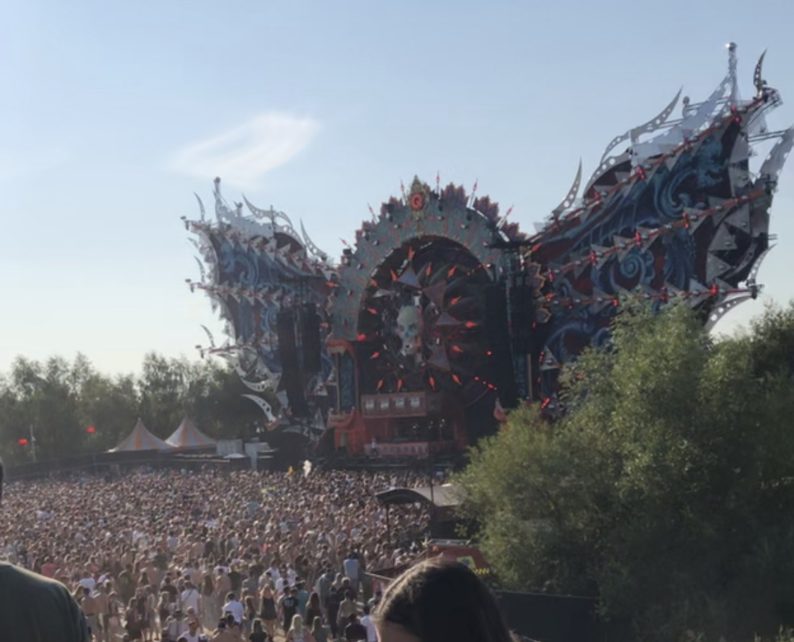
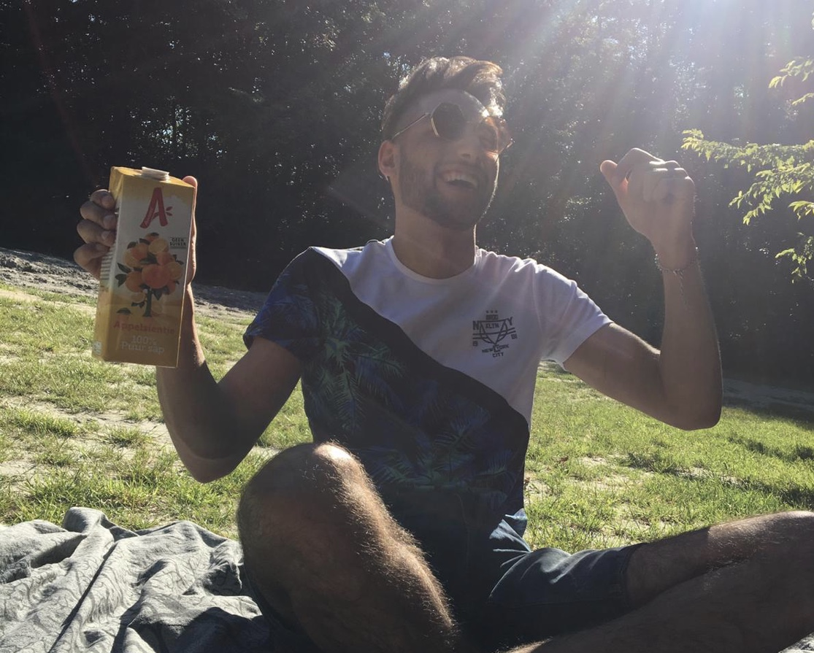

Na de drooglegging van de Haarlemmermeer is in 1853 besloten twee dorpen te stichten, dat waren Kruisdorp en Venneperdorp. Echter werden de dorpen hernoemt in 1868 naar Hoofddorp en Nieuw-Vennep omdat Kruisdorp al in Zeeland bestond. Inmiddels is Hoofddorp ontzettend gegroeid en er bestaat een kans dat Hoofddorp in de toekomst Meerstad gaat heten omdat het zo erg gegroeid is.
Elk jaar worden verschillende evenementen in Hoofddorp gehouden zoals de Concours Hippique, een Paardensportevenement midden in het Haarlemmermeerse bos of Meerlive, een muziek evenement midden in Hoofddorp centrum waarbij het grotendeels door bedrijven in ruil voor reclame word gefinancierd en meestal is een van de twee dagen gratis. Verder heb je ook in het Haarlemmermeerse bos Mysteryland, wat een ongeloofelijk groot festival is. Elk jaar brengt dit duizenden bezoekers naar ons klein dorpje. Als dat niet genoeg was heb je ook een culinair evenement waarmee je door 10 verschillende restaurants gaat voor een hapje en drankje genaamd Heerlijk Hoofddorp.


Toolenburg
Toolenburg is een woonwijk binnen Hoofddorp vernoemd naar de boerderij die er stond voordat het een woonwijk werd. Op Floriande na is Toolenburg de grootste wijk van Hoofddorp met 15.187 inwoners.
In Toolenburg vind je een meer, de Toolenburgerplas die voor veer sportieve activiteiten word gebruikt. Vooral onder scholen is het populair om jaarlijks een rondje om de plas te rennen. Er worden ook vaak evenementen georganiseerd voor het goede doel en in de zomer is het een populaire plek om te zwemmen. Rond de Toolenburgerplas is een TimePointsysteem aanwezig voor sportieve bezoekers. Hardlopers, skeelers, nordic walkers en andere sporters kunnen hiermee via een chip de rondetijden laten meten.
Het gebied is ontstaan door zandwinning voor de wijken Toolenburg en Floriande. Op het toenmalig braakliggende akkerland ontstond een steeds grotere waterplas omgeven door zandbergen. Het gebied is omsloten door woonwijken, de IJweg, de Bennebroekerweg en de busbaan van de Zuidtangent.
De lieveling is een restaurant in Toolenburg nabij de Toolenburgerplas die door gewaagde architectuur een vorm van een vlinder soort de lieveling heeft gekregen. Het is een veelzijdige en kleurrijke restaurant die je altijd verrast met lekker eten.
Restaurant Long Island is een restaurant tegen de Toolenburgerplas aan. Er word vaak gevarieerd lekker en vers eten geserveerd tegen een aantrekkelijke prijs. Dat terwijl je uitzicht hebt op de Toolenburgerplas. Hier ben je gegarandeerd verwend te worden door de kok met onweerstaanbaar eten. Ook is Long Island speciaal omdat geestelijk gehandicapte personeel in dienst heeft.
Verder kent Toolenburg verscheidene sportclubs (ZPCH en SV Hoofddorp) en er zijn tennisbanen, een honkbalveld en een fitnesscentrum. Dat betekent dat er ook in deze kleine wijk genoeg mogelijkheid is voor activiteiten, wat erg gunstig is voor de gezondheid van de bewoners van Toolenburg.
Geniet van het mooiste tennispark in Hoofddorp. Het park is prachtig gelegen in een rustige omgeving. Er zijn 12 tennisbanen, waarvan er 10 verlicht zijn.
Brazilian Jiu Jitsu is bekend geworden met de Gracie challenge. Vanaf 1920 daagde de Gracie familie iedereen uit tot een open gevecht om te bewijzen dat Jiu Jitsu de meest effectieve stijl ter wereld is. Met behulp van Jiu Jitsu versloegen ze boksers, karateka, hapkido beoefenaars en heel veel andere verschillende vechtsporters.
Uiteindelijk is dit uitgegroeid tot de oprichting van de Ultimate Fighting Challenge, oftewel de UFC, die door Royce Gracie in de eerste paar edities met gemak gewonnen werd.
Jiu Jitsu is een sport over controle over een ander. Het is absoluut geen sport waarbij je op elkaar in slaat zoals bij andere vechtsporten. Op die manier is Jiu Jitsu geschikt voor mannen, vrouwen, kinderen, jong en oud. Het unieke van Jiu Jitsu is dat je de technieken leert die passen bij je lichaamsbouw. Sommige mensen zijn groter en zwaarder en zullen zich meer richten op druk en controle. Ben je kleiner, dan richt je je meer op techniek en snelheid. Ben je lang en dun dan kun je veel met je benen doen.
Contact Informatie
U kunt ons bereiken op:
Tel: 0612345678
Email: prive@inholland.nl
Of op locatie:Nepadres 69 te Haarlem
Als u vragen heeft kunt u ook ons contact formulier gebruiken, een medewerker zal u dan zo snel mogelijk beantwoorden